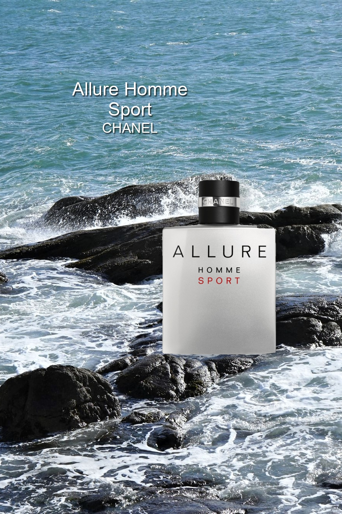

Allure Homme Sport — Chanel
이탈리안 만다린의 산뜻함 뒤로 시더 어코드의 깨끗한 나무 향이 이어집니다. 통카빈의 아몬드 같은 느낌과 화이트 머스크가 더해져, 상쾌한 시작과 부드러운 여운을 함께 보여줍니다.
출시년도
2004
농도
Eau de Toilette
지속시간
개인차 있음
SCENT NOTES
TOP
Orange
오렌지
Sea Notes
마린 노트
Aldehydes
알데하이드
Blood Mandarin
블러드 만다린
HEART
Pepper
페퍼
Neroli
네롤리
Cedar
시더
BASE
Vanilla
바닐라
Tonka Bean
통카빈
White Musk
화이트 머스크
Amber
앰버
Vetiver
베티버
Elemi Resin
엘레미 수지
사용자 후기 요약
깨끗한 시트러스가 부드러운 우디·통카 향으로 이어져 편하게 쓰기 좋다는 의견이 있습니다. 반면 단맛이 오래 남거나 개성이 약하다는 평가도 있고, 지속력에 대한 경험은 서로 다릅니다.
노트·후기 자료: Fragrantica · 사용자 의견 요약 · 2026.11.02 확인